Daisen, Tottori: things to do, food and stays
Daisen · Tottori
Daisen
Highlighted on the Tottori map.
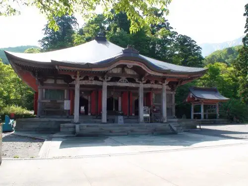
Stay
蒼穹
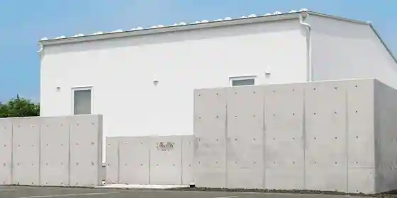
Sokyu
OLIF villa in AKEMANOMORI
OLIF villa in AKEMANOMORI
COAST VILLA DAISEN
COAST VILLA DAISEN
友好館
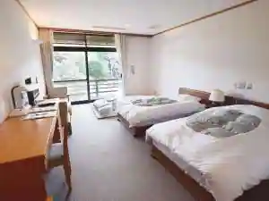
Yuko Kan
ペンションあけまの森
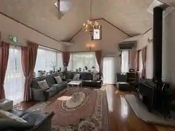
Pension Akemano Mori
Pension Weekend-Citron
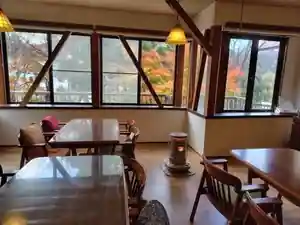
Pension Weekend-Citron
ペンション＆コテージ赤いりぼん
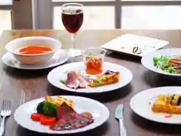
Pension & Cottage Akai Ribon
ペンションわくわく村
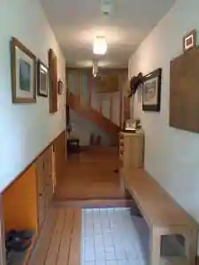
Pension Wakuwaku Mura
ＨＡＬＥ・ＭＡＫＡＷＡＯ
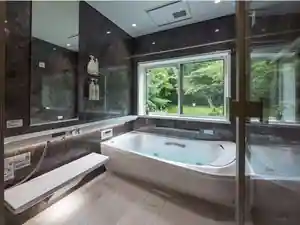
HALE MAKAWAO
Inn in Hanko, Daisen with one group per day.
KnotDaisen
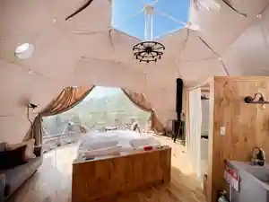
KnotDaisen
ロッヂ・サノ
Lodge Sano
国立公園大山 中の原・ぎんれい
Kokuritsukoen Oyama Nakano Hara Ginrei
Inn in Oyama, Daisen with a quiet countryside setting.
Dining
地魚料理 恵比須
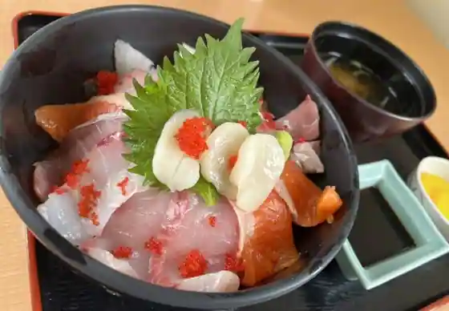
Jizakana Ryori Ebisu
らぁ麺 池島
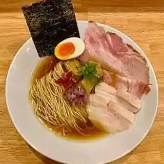
Ra Men Ikejima
たまご屋工房 風見鶏
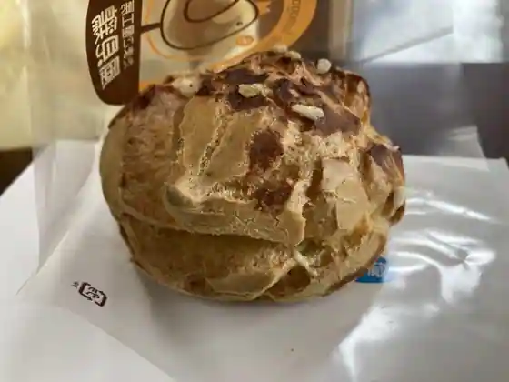
Tamago Ya Kobo Kazamidori
ベーカリーカフェ SANDO
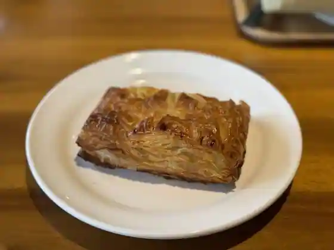
Bakery Cafe SANDO
醍醐
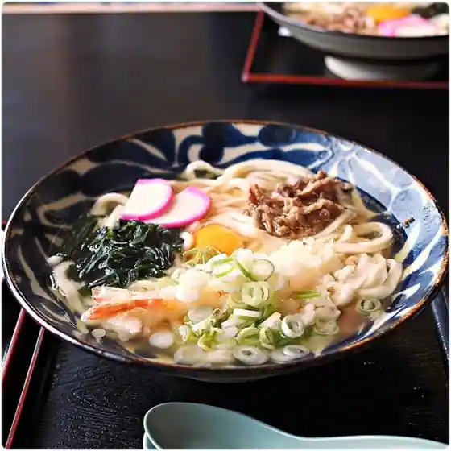
Daigo
道の駅 大山恵みの里
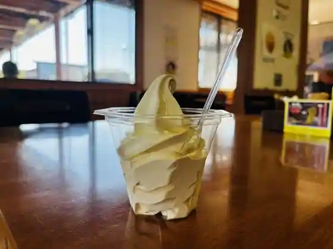
Michi No Eki Oyama Megumi No Sato
モンカフェ
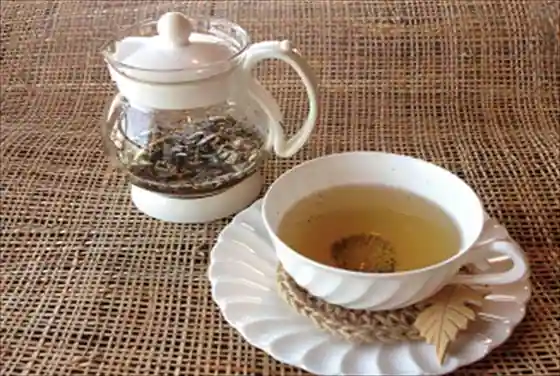
Mon Cafe
CAFE2020
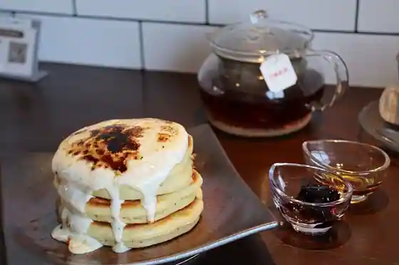
CAFE2020
BIKAI
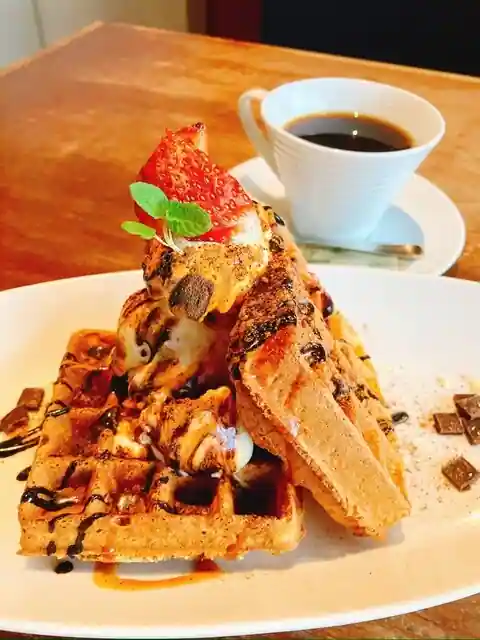
BIKAI
大山時間Shop 大山寺参道店
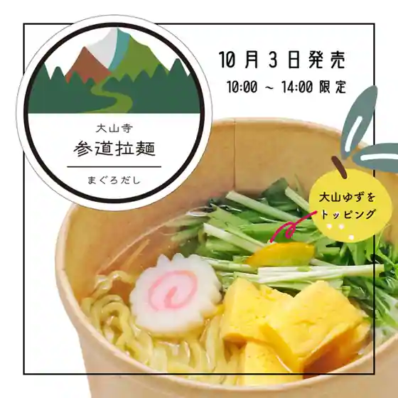
Oyama Jikan Shop Oyama Tera Sando
なごみ茶屋 八光
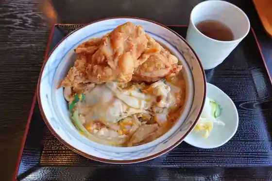
Nagomi Chaya Hakko
神の湯亭
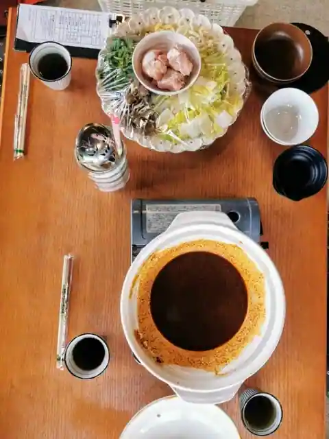
Kami No Yu Tei
Cheesecake専門店 Matsumoto
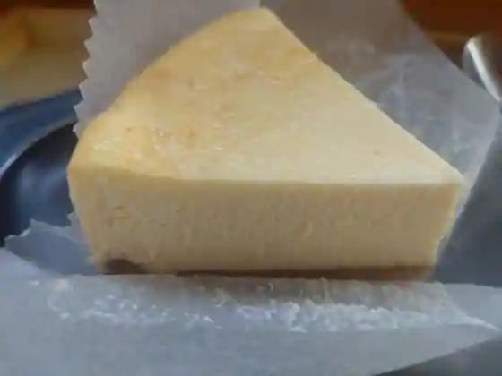
Cheesecake Senmon Matsumoto
宮本旅館
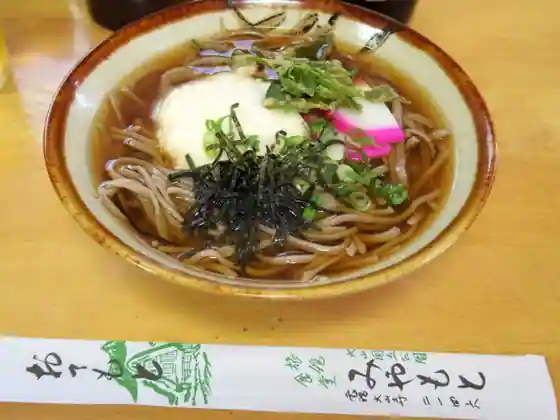
Miyamoto Ryokan
よしぱん
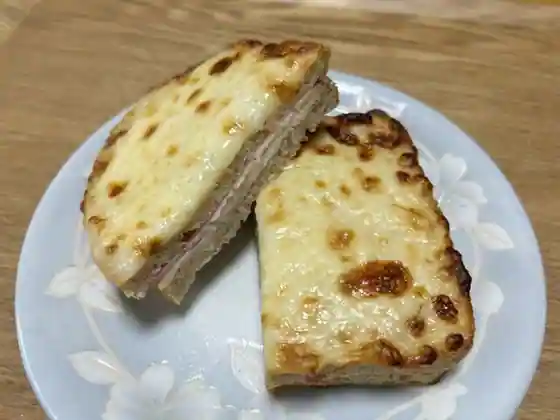
Yoshipan
コモレビト サンセットカフェ
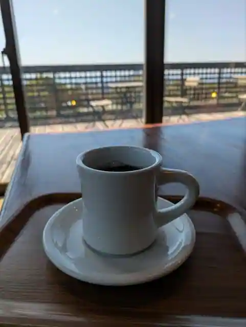
Komorebito Sansetto Cafe
Restaurant scène
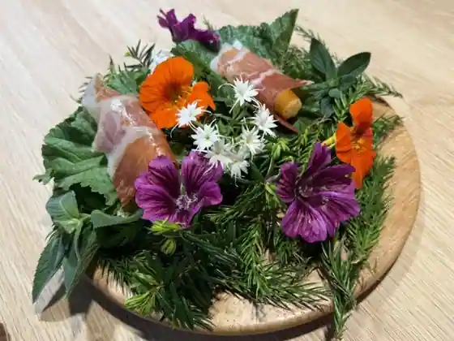
Restaurant sc E ne
喜らく旅館
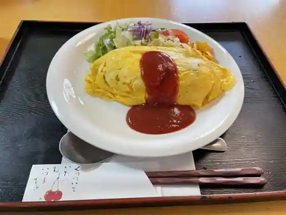
Ki Raku Ryokan
山楽荘
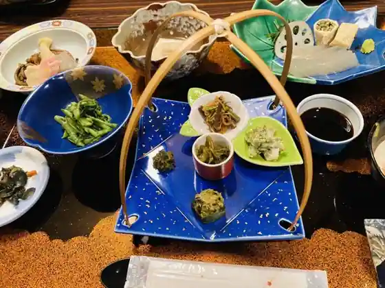
Sanraku So
８４１ラーメン
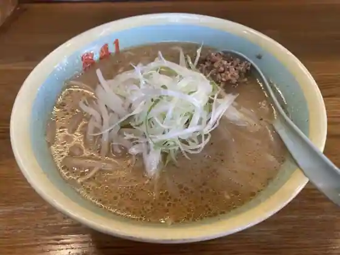
841 Ramen
公園食堂おおさか
Koen Shokudo Osaka
齧珈琲
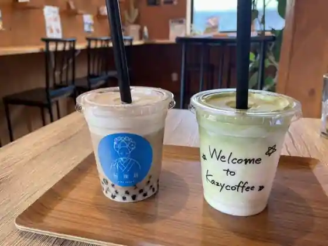
Getsu Coffee
ichi bakery
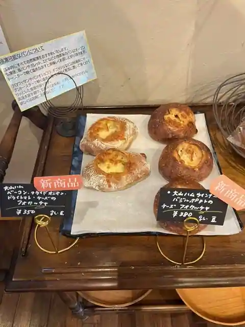
ichi bakery
林たい焼き店
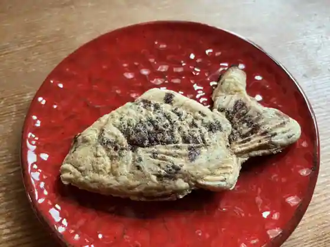
Hayashi Tai Yaki
Sights
Daisen Howaito Resort (Daisen Ski Area)
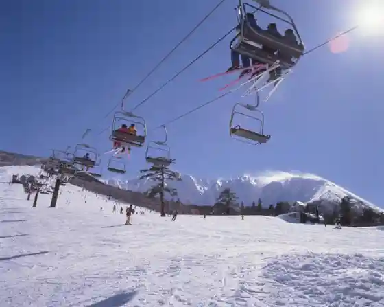
Daisen Teramoto Do
Daisen Hi no Kami Gaku Onsen Go En Yu In
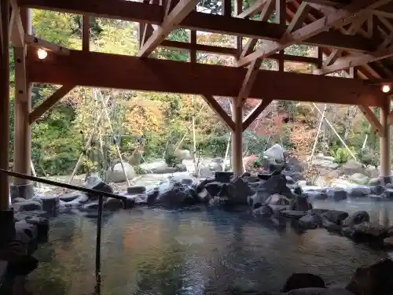
Saiki Banda Iseki
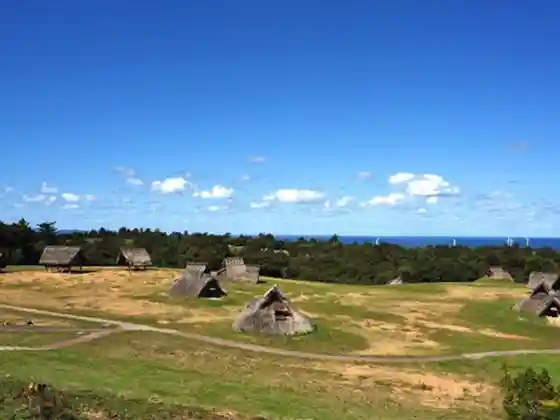
Mori no Kuni Daisen Fiirudoasurechikku
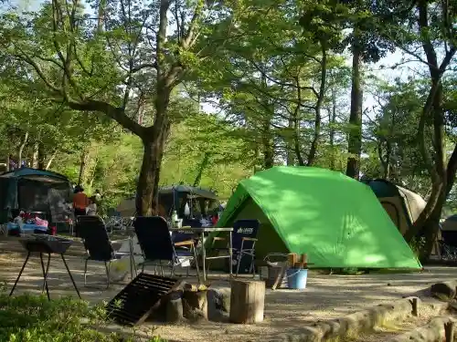
Nawa Shrine
Daijin Sanshin Sha Okunomiya
Ju Kumo Tera
Nio Do Park
Kocha Sofutokuriimu
Roadside Station Daisen Megumi Village
Nakayama Onsen (Yuyu Kurabu naspal)
Daisen Tera Amida Do
Joba Experience
Daisen Tozan
Buna no Mori Uoku
Daisen Kanko Shoko Ka
Daisen Joba Center
O Rai Ya Eki
Ugan Mizu
Daisen Nature Rekishikan
Mini Zazen Taiken to Kowa
Saiki Banda Iseki Iseki Sansaku Kodai Experience
Taue
Daisen Kanko Shoko Ka
Iyashi no Supirichuaruoku
O Ko Ranch
Buna Forest no Kodo Uoku
Su no Shu Experience
Satoyama Uoku
Akamatsu Ike
Daisen Town Hall